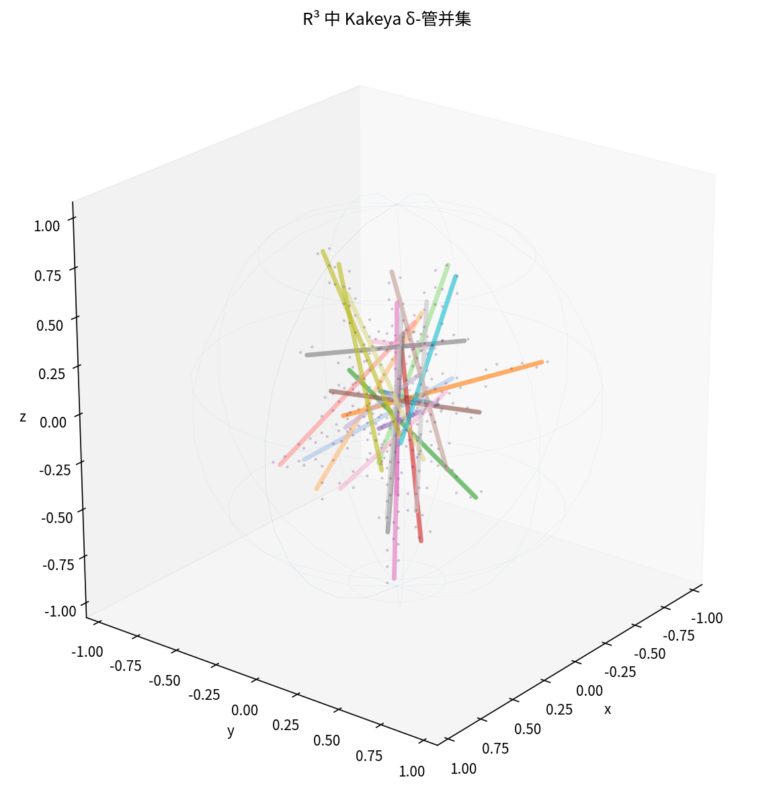

最近一次自主研究周期
初始稳定核心已通过测试和快速模拟；本地模型自主周期将在 GitHub Actions 中首次运行。
本地模型：None
最近渲染：2026-07-26T03:59:01.611527+00:00
交互式三维查看器
旋转模拟视频
最新静态渲染

代理读取论文、建立 254 个编号公式的索引、检查现有代码、生成受限候选修改、运行测试与数值模拟、进行自我批评，并且只有在得分提高且全部验证通过时才接受修改。数值实验用于理解公式与几何结构，不替代论文中的严格证明。
初始稳定核心已通过测试和快速模拟；本地模型自主周期将在 GitHub Actions 中首次运行。
本地模型：None
最近渲染：2026-07-26T03:59:01.611527+00:00
